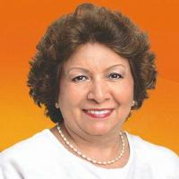

|
Raúl Pacheco
Un deportista yucateco que se destacó en el atletismo, participando en diversas competencias internacionales. Ha sido un símbolo de esfuerzo y dedicación para las futuras generaciones de deportistas en Yucatán
|
Julio Salazar
Un destacado pintor y muralista yucateco, conocido por sus retratos de la región y sus trabajos en el arte muralista mexicano. Fue una de las figuras importantes en el Renacimiento artístico de Yucatán durante el siglo XX.
|

Ana Rosa Payán Cervera
Es una de las políticas más importantes de Yucatán, ha sido alcaldesa de Mérida y ha tenido una carrera destacada en la política estatal. Fue una de las primeras mujeres en acceder a cargos de gran relevancia en el estado.
|